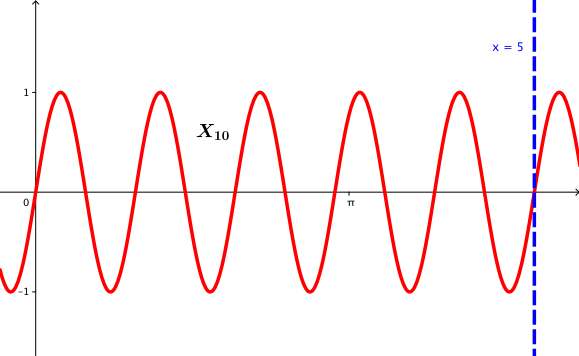
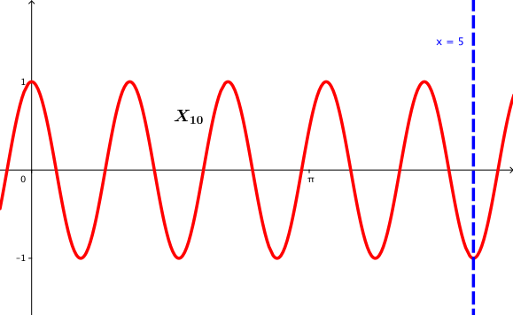
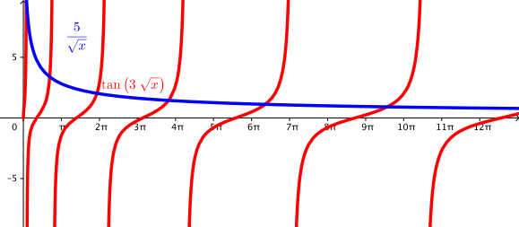

4.3. Özdeğerlerin Varlığı
Kayıt Tarihi:
Son Güncelleme:
Bu bölüm biraz uzun, Sturm-Liouville teorisinin en önemli sonuçlarını kanıtlayacağız. Elde edeceğimiz bu sonuçlar Bölüm 3.9 ile ortaya koyduğumuz bazı sorulara cevap verecek.
Anahtar Kelimeler: Hill denklemi · özdeğer · periyodik SLP · prüfer dönüşümü · sturm-liouville problemi · Sturm mukayese teoremiÖncelikle değişkenlere ayırma yönteminin tamamen uygulanabilir olduğu Sturm-Liouville problemlerini diğerlerinden ayırmak için bir gruplama yapacağız.
Tanım 4.3.1
Eğer $p(a)>0$, $p(b)>0$ ise, $q$ fonksiyonu $[a,b]$ aralığında sürekli ise ve $a_1,a_2,b_1,b_2$ sayıları negatif değil ise bu durumda ilgili Sturm-Liouville problemine düzgün bir Sturm-Liouville problemi denir, düzgün olmayan problemlere de tekil (singüler) problemler denir.Yukarıdaki tanıma göre (4.1.2) ve (4.1.3) koşulları sağlanırsa problem düzgündür.
Örnek 4.3.1
$[-1,1]$ aralığında hiçbir sınır koşulu verilmemiş olan $$[(1-x^2)X']'+\lambda X=0$$ Sturm-Liouville problemi singüler bir problemdir, çünkü $p(x)=1-x^2$ fonksiyonu $x=\pm1$ noktalarında sıfır olur.
Örnek 4.3.2
$(a,b)$ aralığında tanımlanan $$\begin{array}{l} (xX')'+\left(\lambda x-\frac{n^2}{x} \right)X=0\\ X(a)=0\\ X(b)=0 \end{array}$$ Sturm-Liouville problemi $a>0$ için düzgündür. Fakat $a=0$ ise $x=a$ noktasında hem $p$ fonksiyonu sıfır olacağından, hem de $q$ fonksiyonu süreksiz olacağından problem singülerdir.Uygulamalarda aşağıda tanımlayacağımız tipten problemlerle çok sık karşılaşılır.
Tanım 4.3.2
Eğer $p(a)>0$ ise (4.1.1) denkleminin $$X(a)=X(b)\quad\text{ve}\quad X'(a)=X'(b)$$ koşullarını sağlayan bir $X:[a,b]\rightarrow\mathbb{R}$ çözümünün bulunması problemine bir periyodik Sturm-Liouville problemi denir.
Örnek 4.3.3
George William Hill (1838-1914) tarafından ayın hareketleri incelenirken kullanılan ve Hill denklemi olarak adlandırılan $$X''+(\lambda-q)X=0$$ denklemi $$X(0)=X(\pi)\quad\text{ve}\quad X'(0)=X'(\pi)$$ sınır koşullarıyla verilirse $(0,\pi)$ aralığında periyodik bir Sturm-Liouville problemi olur.Uygulamaların önemli bir kısmında düzgün Sturm-Liouville problemleri karşımıza çıkar ve bu tip problemleri çalışmak singüler olanlara göre daha kolaydır, bu bölümün geri kalan kısmında sadece düzgün problemlerle ilgileneceğiz. Singüler problemler için literatürde Claude Hugo Hermann Weyl (1885-1955) tarafından ayrıca bir teori geliştirilmiştir.
İkinci mertebeden diferensiyel denklemleri çalışırken denklemi birinci mertebeden bir sisteme çevirmek genellikle kolaylık sağlar. (4.1.1) denkleminde $Y:=pX'$ tanımını yaparsak birinci mertebeden \begin{eqnarray} X' &=& \frac{1}{p}Y\label{eq:slp-sys-1}\tag{4.3.1}\\ Y' &=& (q-\lambda r)X\label{eq:slp-sys-2}\tag{4.3.2} \end{eqnarray} diferensiyel denklem sistemine ulaşırız.
Bu denklem sistemindeki araştırmamıza şu soruyla başlayacağız: Acaba özfonksiyonların sıfırları var mı? Bu soru oldukça anlamlı bir sorudur, çünkü bir çok uygulamada sınır koşulları sıfır noktasında verilir, yani özfonksiyonun sıfırı bulunuyorsa problemin çözümü var olabilir.
Bazı durumlarda problemi kutupsal koordinatlara taşımak işleri kolaylaştırabilir. 1926 yılında Heinz Prüfer (1896-1934) alışılmışın dışında olan $X=R\sin\theta$ ve $Y=R\cos\theta$ eşitliklerini sağlayan $R$ ve $\theta$ koordinatlarını seçmiştir. Bu yüzden $$X=R\sin\theta\quad\text{ve}\quad pX'=R\cos\theta$$ dönüşümlerine günümüzde Prüfer dönüşümleri diyoruz. Bu dönüşümleri \eqref{eq:slp-sys-1} ve \eqref{eq:slp-sys-2} eşitliklerine uygularsak \begin{eqnarray} R'\sin\theta+R\theta'\cos\theta &=& \frac{1}{p}R\cos\theta\label{eq:slp-prufer-1}\tag{4.3.3}\\ R'\cos\theta-R\theta'\sin\theta &=& (q-\lambda r)R\sin\theta\label{eq:slp-prufer-2}\tag{4.3.4} \end{eqnarray} eşitliklerini elde ederiz. \eqref{eq:slp-prufer-1} eşitliğini $\sin\theta$ ile \eqref{eq:slp-prufer-2} eşitliğini de $\cos\theta$ ile çarpıp bu eşitlikleri taraf tarafa toplarsak \begin{equation} \label{eq:slp-prufer-3} \tag{4.3.5} R'=\frac{R}{2}\left(\frac{1}{p}+q-\lambda r\right)\sin2\theta \end{equation} eşitliğine varırız. Benzer şekilde \eqref{eq:slp-prufer-1} eşitliğini $\cos\theta$ ile \eqref{eq:slp-prufer-2} eşitliğini de $\sin\theta$ ile çarpıp taraf tarafa çıkarırsak \begin{equation} \label{eq:slp-prufer-4} \tag{4.3.6} \theta'=\frac{1}{p}\cos^2\theta+(\lambda r-q)\sin^2\theta \end{equation} eşitliğine varırız. Dikkat edilirse \eqref{eq:slp-prufer-4} eşitliği $R$'den bağımsızdır, dolayısıyla her $\lambda$ sayısı ve herhangi bir $\alpha\in\mathbb{R}$ sayısı için bu denklemin $\theta_\lambda(a)=\alpha$ koşulunu sağlayan tek bir $\theta_\lambda$ çözümü vardır. Şimdi bu çözümü \eqref{eq:slp-prufer-3} eşitliğinde yerine yazarsak, $F_\lambda:=\frac{1}{2}(1/p+q-\lambda r)$ olarak tanımlayarak, sabit bir $\lambda$ için $R_\lambda$ çözümünün $$R_\lambda(x)=R_\lambda(a)e^{\int_{a}^{x}F_\lambda(s)\sin2\theta_\lambda(s)ds}$$ biçiminde olduğunu görürüz. Burada dikkat edelim, eğer $\lambda$ özdeğerine karşılık gelen özfonksiyon $X_\lambda$ ise, $R(a)\neq0$ olacaktır, çünkü aksi durumda $$0=R^2_\lambda(a)=X^2_\lambda(a)=Y^2_\lambda(a)=X^2_\lambda(a)+p^2(a)[X'_\lambda(a)]^2$$ olurdu ve bu da $X_\lambda(a)=X'_\lambda(a)=0$ olmasını gerektirir ki bu durumda da $X_\lambda\equiv0$ olurdu. Sonuç olarak her $x$ için $R_\lambda>0$ olacaktır ve $X_\lambda=R_\lambda\sin\theta_\lambda$ çömünün sıfırlarının olması için gerek ve yeter koşul bazı $k$ tamsayıları için $\theta_\lambda=k\pi$ olmasıdır.
Özfonksiyonların sıfırlarını çalışmaya devam etmek için önce özdeğerlerin ve özfonksiyonların varlığını kanıtlamamız gerekir. Bunun için Sturm'un mukayese teoreminin bir versiyonu olan aşağıda vereceğimiz sonuç oldukça önemlidir.
Lemma 4.3.1
$[a,b]$ aralığında $p$, $q$, $r$ fonksiyonları sürekli, $p$ fonksiyonu pozitif değerli ve sürekli türevlenebilir olsun. Ayrıca $\theta_{\lambda_1}$ ve $\theta_{\lambda_2}$ ile \eqref{eq:slp-prufer-4} denkleminin sırasıyla $\lambda=\lambda_1$ ve $\lambda=\lambda_2$ değerlerine karşılık gelen çözümleri olsunlar. Bu durumda eğer $\lambda_1<\lambda_2$ ve $\theta_{\lambda_1}(a)\leq \theta_{\lambda_2}$ ise $(a,b]$ aralığında $\theta_{\lambda_1}<\theta_{\lambda_2}$ eşitsizliği sağlanır.İspat: Öncelikle sadelik açısından \begin{eqnarray*} \omega &:=& \theta_{\lambda_2}-\theta_{\lambda_1}\\ f &:=& \left(\lambda_1r-q-\frac{1}{p}\right)\frac{\sin^2\theta_{\lambda_2}-\sin^2\theta_{\lambda_1}}{\theta_{\lambda_2}-\theta_{\lambda_1}}\\ g &:=& (\lambda_2-\lambda_1)r\sin^2\theta_{\lambda_1} \end{eqnarray*} tanımlarını yapalım. \eqref{eq:slp-prufer-4} denklemini kullanarak \begin{eqnarray*} \omega' &=& \frac{1}{p}(\cos^2\theta_{\lambda_2}-\cos^2\theta_{\lambda_1})+(\lambda_2r-q)\sin^2\theta_{\lambda_2}-(\lambda_1r-q)\sin^2\theta_{\lambda_1}\\ &=& \frac{1}{p}(-\sin^2\theta_{\lambda_2}+\sin^2\theta_{\lambda_1})+(\lambda_2r-q)\sin^2\theta_{\lambda_2}-(\lambda_1r-q)\sin^2\theta_{\lambda_1}\\ &=& \left(\lambda_1r-q-\frac{1}{p}\right)(\sin^2\theta_{\lambda_2}-\sin^2\theta_{\lambda_1})+(\lambda_2-\lambda_1)r\sin^2\theta_{\lambda_2}\\ &=& f\omega+g \end{eqnarray*} eşitliğini elde ederiz. Diğer yandan ortalama değer teoremi gereği $$\sin^2\theta_{\lambda_2}-\sin^2\theta_{\lambda_1}=(\sin2\theta)(\theta_{\lambda_2}-\theta_{\lambda_1})$$ eşitliği sağlanacak şekilde bir $\theta\in(\theta_{\lambda_1},\theta_{\lambda_2})$ sayısı vardır. Bundan dolayı herhangi bir $x\in[a,b]$ için $\theta_{\lambda_2}-\theta_{\lambda_1}=0$ olsa bile bu noktada $f$ fonksiyonunun limiti vardır. Yani sonuç olarak $f$ fonksiyonu $[a,b]$ aralığında ya süreklidir, ya da sürekli olarak genişletilebilir. Böylece $\omega'=f\omega+g$ lineer denklemi çözülürse her $x\geq a$ için $$\omega(x)=e^{\int_{a}^{x}f}\left[\int_{a}^{x}g(s)e^{-\int_{a}^{s}f}\,ds+\omega(a)\right]$$ çözümü elde edilir. Şimdi, $g$'nin tanımı gereği $g\not\equiv0$ olmalıdır, çünkü aksi durumda bazı $k$ tamsayıları için $\theta_{\lambda_2}=k\pi$ olur ki bu da \eqref{eq:slp-prufer-4} denklemi ile çelişir. Böylece $[a,x]$ alt aralığında $g>0$ olur. Bundan ve $\omega(a)\geq0$ olmasından dolayı, yukarıdaki son eşitlikten $\omega(x)>0$ olur, $x$ keyfi olduğundan $[a,b]$ aralığında $\omega>0$ elde edilir ki istenendir.$$\tag*{$\blacksquare$}$$
Aşağıdaki sonuçla şimdi özdeğerlerin ve özfonksiyonlarının varlığını kanıtlayacağız. Sturm'un yöntemi yerine Prüfer'in metodunu kullanacağız.
Teorem 4.3.1
Düzgün bir Sturm-Liouville probleminin sonsuz sayıda özdeğeri vardır. Ayrıca- bu özdeğerler $\lambda_1<\lambda_2<\cdots<\lambda_n<\cdots$ biçiminde artan bir dizi oluşturur,
- $\lambda_n$ özdeğerine karşılık gelen $X_n$ özfonksiyonunun $(a,b)$ aralığında tam olarak $(n-1)$ tane sıfırı vardır ve bunlar basit sıfırlardır.
İspat: İspatı özet olarak vereceğiz, bazı teknik detayları okuyucuya bırakacağız. Eğer $\theta_{\lambda}$ fonksiyonu \eqref{eq:slp-prufer-4} denkleminin bir çözümü ise bu durumda $\lambda$ sayısı (4.1.1)-(4.1.3) Sturm-Liouville probleminin bir özdeğeri ve $X_\lambda=R_\lambda\sin\theta_{\lambda}$ fonksiyonu da buna karşılık gelen özfonksiyon olur. Eğer $X_\lambda$ fonksiyonu (4.1.2) ve (4.1.3) koşullarını sağlıyorsa $$0=a_1X_\lambda(a)-b_1X_\lambda'(a)=R_\lambda(a)\left[a_1\sin\theta_\lambda(a)-\frac{b_1}{p(a)}\cos\theta_\lambda(a) \right]$$ ve $$0=a_2X_\lambda(b)-b_2X_\lambda'(b)=R_\lambda(b)\left[a_2\sin\theta_\lambda(b)-\frac{b_2}{p(b)}\cos\theta_\lambda(a) \right]$$ eşitlikleri geçerlidir. Bundan dolayı $x=a$ noktasındaki koşulun sağlanması için \eqref{eq:slp-prufer-4} denkleminin $\theta_\lambda$ çözümü; $a_1=0$ ise $\alpha=\pi/2$ ve $a_1\neq0$ ise $$0\leq\alpha<\frac{\pi}{2}\quad\text{ve}\quad \tan\alpha=\frac{b_1}{a_1p(a)}\geq0$$ olmak üzere $\theta_\lambda(a)=\alpha$ eşitliğini sağlamalıdır (bunu dğrulayın). Benzer şekilde diğer sınır koşulunun sağlanması için bu çözümü; $a_2=0$ ise $\beta=\pi/2$ ve $a_2\neq0$ ise $$\frac{\pi}{2}<\beta\leq\pi\quad\text{ve}\quad \tan\beta=-\frac{b_2}{a_1p(b)}\leq0$$ olamak üzere $\theta_\lambda(b)=\beta+(n-1)\pi$ eşitliğini sağlamalıdır, $n$ bir doğal sayıdır (bunu doğrulayın).
Adi diferensiyel denklemler teorisinden $\theta_\lambda(b)$'nin $\lambda$'ya göre sürekli olduğunu ve Lemma 4.3.1 gereği bu fonksiyonun $\lambda$'ya göre kesin artan olduğunu biliyoruz. Bu durumda eğer $\theta_\lambda(b)<\pi/2$ olacak şekilde bir $\lambda$ varsa ve $\lambda\rightarrow\infty$ için $\theta_\lambda(b)\rightarrow\infty$ ise bu durumda her $n\in\mathbb{N}$ için $$\theta_{\lambda_n}(b)=\beta+(n-1)\pi$$ ve $\lambda_n<\lambda_{n+1}$ olur, böylece (i) kanıtlanır. (Yukarıdaki iddialar doğrudur, kanıtlayın.)
Şimdi diğer önermeyi kanıtlayalım. Bir $X_n=R_{\lambda_n}\sin{\lambda_n}$ özfonksiyonunun bir $(a,b)$ aralığında bir sıfırının olması için gerek yeter koşul $\theta_{\lambda_n}=k\pi$ olacak şekilde bir $k$ tamsayısının var olmasıydı, bu durumda da \eqref{eq:slp-prufer-4} eşitliği gereği bu aralıkta $\theta'_{\lambda_n}(x)>0$ olacağından $\theta_{\lambda_n}$ fonksiyonu $(a,b)$ aralığındaki her değeri sadece bir kez alır (monotonluk gereği). Diğer yandan, $0<\beta\leq\pi$ olduğundan $$(n-1)\pi<\theta_{\lambda_n}(b)=\beta+(n-1)\pi\leq n\pi$$ ve $0\leq\theta_{\lambda_n}(a)\leq\pi/2$ olduğundan $\theta_{\lambda_n}$ fonksiyonu $(a,b)$ aralığında $k=1,2,\ldots,n-1$ olmak üzere $k\pi$ değerlerini sadece birer kez alır, yani $n-1$ tane sıfır vardır. Ayrıca eğer $\theta_{\lambda_n}(x)=k\pi$ ise $$p(x)X'_n(x)=Y_n(x)=R_{\lambda_n}(x)\cos\theta_{\lambda_n}(x)\neq0$$ olduğundan bu sıfırlar basittir.$$\tag*{$\blacksquare$}$$
Elbette bir özfonksiyon $x=a$ ve $x=b$ noktalarında ilave sıfırlara sahip olabilir.
Örnek 4.3.4
Eğer $a>0$ ise daha önce Bölüm 1.4'te $$\begin{array}{l} X''+\lambda X=0\\ X(0)=0,\; X(a)=0 \end{array}$$ Sturm-Liouville probleminin özdeğerlerinin ve bunlara karşılık gelen özfonksiyonlarının $$\lambda_n=\frac{n^2\pi^2}{a^2},\quad X_n(x)=\sin\frac{n\pi}{a}x$$ olduğunu göstermiştik. Görüldüğü gibi $n\geq2$ ise özfonksiyonun $(0,a)$ aralığında $k=1,2,\ldots,n-1$ olmak üzere $x_k:=ka/n$ noktalarındadır. Ayrıca $x=0$ ve $x=a$ noktalarında da sıfır vardır.
Örnek 4.3.5
Eğer $a>0$ ise daha önce Bölüm 3.4'ten $$\begin{array}{l} X''+\lambda X=0\\ X'(0)=0,\; X'(a)=0 \end{array}$$ probleminin özdeğerlerinin $$\lambda_1=0\quad\text{ve}\quad\lambda_n=\frac{(n-1)^2\pi^2}{a^2},\;n>1$$ ve karşılık gelen özfonksiyonlarının $$X_1\equiv1\quad\text{ve}\quad X_n(x)=\cos\frac{(n-1)\pi}{a}x$$ olduğunu biliyoruz. Çözümün sıfırları $$x_k:=\frac{(2k-1)a}{2(n-1)},\quad k=1,2,\ldots,n-1$$ noktalarındadır, ayrıca uç noktalarda ilave sıfırlar yoktur.

Şekil 4.1: Sırasıyla Örnek 4.3.4 ve Örnek 4.3.5'de verilen özfonksiyonlarının $n=10$ ve $a=5$ için grafiği
Örnek 4.3.6
Pozitif $a$ ve $h$ sabitleri için $[0,a]$ aralığında $$\begin{array}{l} X''+\lambda X=0\\ hX(0)-X'(0)=0\\ X'(a)=0 \end{array}$$ Sturm-Liouville problemini ele alalım. Örnek 4.1.2'den $\lambda=\lambda_n$ özdeğerlerinin $$\tan\sqrt{\lambda}\,a=\frac{h}{\sqrt{\lambda}}$$ denkleminin kökleri olduğunu ve karşılık gelen özfonksiyonların da $$X_n(x)=\frac{\cos\sqrt{\lambda_n}(a-x)}{\sin\sqrt{\lambda_n}\,a}$$ olduğunu biliyoruz. Aşağıdaki şekilden de anlaşılacağı gibi özdeğerler pozitif artan bir dizi oluşturur. Bu durumda $n-$inci özdeğer için $$\frac{(n-1)\pi}{a}<\sqrt{\lambda_n}<\frac{(2n-1)\pi}{2a}$$ eşitsizliği geçerlidir.
$X_1$ özfonksiyonunun $(0,a)$ aralığında hiç sıfırı yoktur, gerçekten $0
Fakat $n>1$ için $(0,a)$ aralığında, $\sqrt{\lambda_n}(a-x)$ ifadesini $\pi/2$'nin tek tamsayı katı yapan $$x_k:=a-\frac{(2k-1)\pi}{2\sqrt{\lambda_n}},\quad k=1,2,\ldots,n-1$$ noktalarında $X_n$ özfonksiyonunun sıfırları vardır. Diğer yandan, $x_k$ ifadesi $k$'ya göre azalandır, $x_{1/2}=a$ ve $$k=\frac{2a\sqrt{\lambda_n}+\pi}{2\pi}\quad\text{için}\quad x_k=0$$ şeklindedir yukarıda verdiğimiz $\sqrt{\lambda_n}$ 'nın aralığını belirten eşitsizlik göz önüne alındığında bu $k$ değerinin $n-1/2$ ile $n$ arasında olduğu anlaşılır. Dolayısıyla yukarıda verdiğimiz $x_k$ sayılarını $(0,a)$ aralığında bırakan $k$ sayıları sadece $k=1,2,\ldots,n-1$ sayılarıdır, yani $X_n$ özfonksiyonunun $(0,a)$ aralığında tam olarak $n-1$ tane sıfırı vardır.

Şekil 4.2: Yukarıdaki örnekte verilen özdeğerleri gösterir, $a=3$ ve $h=5$ alınmıştır.
Sıradaki vereceğimiz teorem Liouville tarafından kanıtlanmıştır ve bize özdeğerlerin dağılımı hakkında bilgi verir. Ayrıca daha önce ortaya koyduğumuz dokuz sorudan birine cevap verir.
Teorem 4.3.2
(4.1.1)-(4.1.3) ile verilen düzgün Sturm-Liouville probleminin özdeğerler dizisi $\{\lambda_n\}$ olsun, bu durumda $$n\rightarrow\infty\quad\text{için}\quad \frac{\lambda_n}{n}\rightarrow\infty$$ olur.
İspat: Teorem 4.3.1 ile, yeterince büyün $n>1$ sayıları için $\theta_{\lambda_n}$ fonksiyonunun kesin artan olduğunu ve $(a,b)$ aralığında $\theta_{\lambda_n}(x_k)=k\pi$ olacak şekilde tam olarak $n-1$ tane $x_1
Şimdi $h$ ile $\theta_{\lambda_n}$ fonksiyonunun tersini gösterirsek, $\pi\leq\theta\leq(n-1)\pi$ için geçerli olan $\theta=\theta_{\lambda_n}\left(h(\theta)\right)$ eşitliğinin türevini alırsak $1=\theta'_{\lambda_n}\left(h(\theta)\right)h'(\theta)$ eşitliğini elde ederiz. Buradan da $$b-a>x_{n-1}-x_1=h\left[(n-1)\pi\right]-h(\pi)=\int_{\pi}^{(n-1)\pi}h'(\theta)\,d\theta=\int_{\pi}^{(n-1)\pi}\frac{1}{\theta'_{\lambda_n}\left(h(\theta)\right)}d\theta$$ eşitsizliğinin sağlandığı görülür. Eğer $p_m$, $q_m$ ve $r_M$ ile $[a,b]$ aralığında sırasıyla $p$ ve $q$ fonksiyonlarının minimum değerleri ile $r$ fonksiyonunun maksimum değerini gösterelim, $\theta_{\lambda_n}\left(h(\theta)\right)=\theta$ olduğunu hatırlayıp \eqref{eq:slp-prufer-4} eşitliğini kullanırsak $$\theta'_{\lambda_n}\left(h(\theta)\right)\leq\frac{1}{p_m}\cos^2\theta+(\lambda_nr_M-q_m)\sin^2\theta$$ eşitsizliğini gözlemleriz. Bu eşitliğin sol tarafı $\pi-$periyodik olduğundan son iki eşitsizlikten $$b-a>(n-2)\int_{0}^{\pi}\frac{1}{\frac{1}{p_m}\cos^2\theta+(\lambda_nr_M-q_m)\sin^2\theta}d\theta$$ sonucuna varılır. Bir integral tablosu kullanarak $$\int_{0}^{\pi}\frac{1}{s^2\cos^2\theta+t^2\sin^2\theta}d\theta=\frac{\pi}{st}$$ olduğunu görürüz, yani $$b-a>\frac{\pi(n-2)}{\sqrt{\frac{1}{p_m}(\lambda_nr_M-q_m)}}=\frac{\pi(n-2)\sqrt{p_m}}{\sqrt{\lambda_nr_M-q_m}}$$ eşitsizliğine varırız. Buradan da yeterince büyük $\lambda_n$ sayıları için $$\lambda_n>\frac{q_n}{r_M}+\left(\frac{\pi}{b-a}\right)^2\frac{p_m}{r_M}(n-2)^2$$ olduğu sonucuna varırız ki bu durumda $n\rightarrow\infty$ için $\lambda_n/n\rightarrow\infty$ olduğu açıktır.$$\tag*{$\blacksquare$}$$
Örnek 4.3.7
Daha önce ele aldığımız Örnek 4.3.4-Örnek 4.3.6 örneklerindeki özdeğerlerin $$\lambda_n\geq\frac{\pi^2(n-1)^2}{a^2}$$ eşitsizliğini sağladıkları açıktır, yani $n\rightarrow\infty$ için $\lambda_n/n\rightarrow\infty$ olduğu açıktır.
Şimdiye kadar yaptığımız araştırmalarda, Bölüm 3.9'da ortaya koyduğumuz soruların (vi) ve (ix) hariç hepsini olumlu olarak cevapladık. Sıradaki bölümde bu kalan soruları da cevaplayacağız.
4.2. Özdeğerler ve Özfonksiyonlar
Fourier Analizi
4.4. Genelleştirilmiş Fourier Serileri